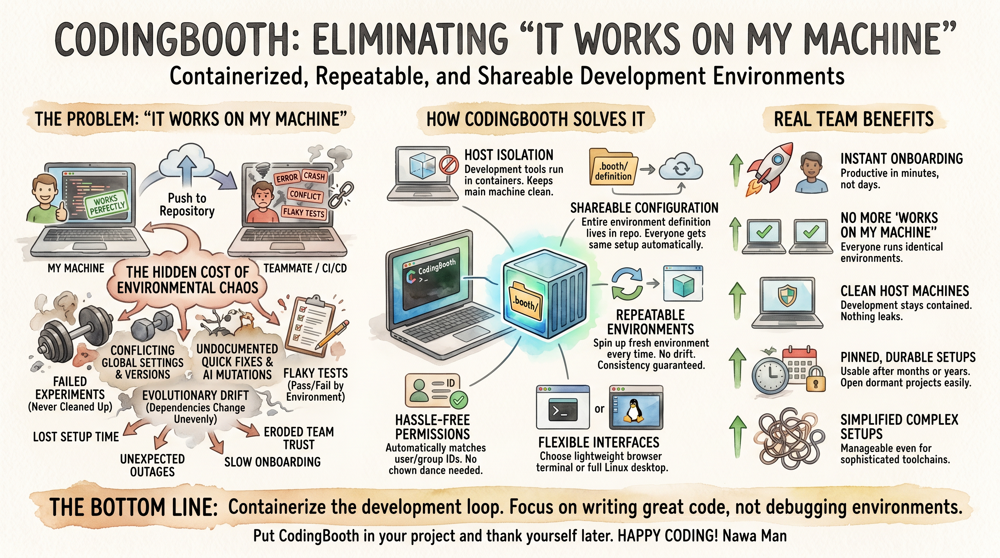
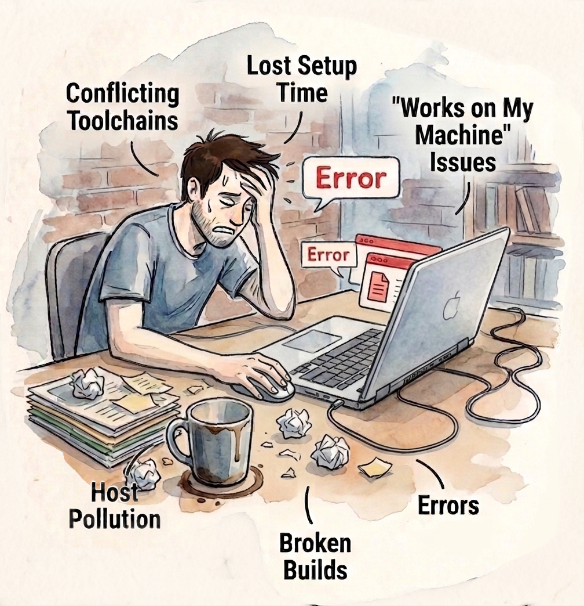
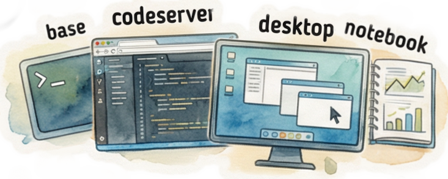

29 May 2026 · Nawa Man
When the environment stops being a variable, teams can focus on the code.

We've all been there. Your code runs perfectly on your laptop. You push it to the repository, and suddenly everything breaks for your teammate or in CI/CD. Hours — sometimes days — disappear into debugging environment differences, version conflicts, flaky tests, and mysterious production failures.
This classic problem has a name: “It works on my machine.”
CodingBooth aims to eliminate that pain point once and for all by giving every project its own isolated, repeatable, and shareable development environment.
Prefer to watch? Here's the same pitch as a YouTube Shorts video (about 2½ minutes).
The “works on my machine” problem isn't one bug — it's the accumulated weight of failed experiments left behind, conflicting global tools, undocumented quick fixes, AI assistants quietly mutating configs, and tests that pass or fail depending on whose laptop they run on. The result is lost setup time, surprise production outages, eroded team trust, and an onboarding experience measured in days instead of minutes.

CodingBooth puts the entire development environment in your repository — declared in a .booth/ folder, brought up with one command, contained in a container. Tools run
inside, not on your host. Every teammate gets exactly the same setup automatically. Spin up a
fresh one any time; no drift, no hidden state. UID/GID mapping is handled for you so files stay
yours. Attach via terminal, browser VS Code, Jupyter, or a full Linux desktop — same environment
underneath, different lens on top.

The payoff for teams: instant onboarding, identical environments across every machine, a host that stays clean, and setups that are still usable months or years later when you come back to a dormant project.
CodingBooth doesn't just solve a technical problem — it restores confidence in the development process. When the environment is no longer a variable, teams can focus on what actually matters: writing great code.
Production is containerized. CI is containerized. The development loop — where developers actually spend their day — finally can be too. Put CodingBooth in your project and thank yourself (and your team) later.
Happy coding!
Nawa Man
Comments